домашних кошек в России. Всего питомцев — 74,8 млн, на 11% больше, чем в 2020 году.
кошек в той или иной степени имеют МКБ. Болезнь входит в тройку основных причин смертности.
чаще симптомы проявляются у котов, чем у кошек.

Выявляет лишь глубокие нарушения мочеполовой системы.

Многие камни нерентгеноконтрастны. Нужны клизма или седация, мелкий песок часто не виден.

Видит все виды уролитов, но клиникам не хватает аппаратов и подготовленных врачей. Исследование дорогое и долгое.

Дорогое оборудование, слабая оснащённость клиник, процедура сложная и травматичная.

Не показывает ранние признаки МКБ: низкие чувствительность и специфичность, нужна лаборатория.
Чтобы проверить кошку сейчас, нужно выделить несколько часов, отвезти её в клинику и оплатить обследование. УЗИ или рентген стоят около 3 500 ₽. Для ранней диагностики такое обследование должно быть профилактическим — не реже одного раза в год.
Для проведения анализа необходимо собрать не более 0,5 мл мочи питомца.
Доставка биоматериала в лабораторию.
Заключение на электронную почту в тот же или на следующий день.
Нашим коллективом под руководством профессора А.К. Мартусевича в рамках нового направления лабораторной диагностики – биокристалломики – на протяжении более 25 лет изучаются возможности использования феномена кристаллизации биологических жидкостей организма для раннего выявления различных заболеваний, в том числе МКБ.
в России, +4,3% за год. За 5 лет в Москве +26%, в Санкт-Петербурге +12,9%.
платные ветуслуги в 2024 году против 41,7 млрд ₽ в 2023-м. Почти треть владельцев тратит больше 10 тыс. ₽ в год.
потенциальная цена одного анализа: закупка и амортизация устройства, работа специалиста, прибыль клиники.
исследований в год при полном запуске: около 50 млн кошек, 30% ответственных хозяев и 10% рынка.
оценка ежегодной прибыли проекта при этих условиях.